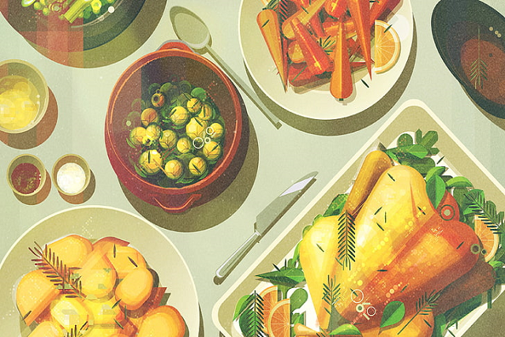

맛집
우리는 같은 맛집이어도 정확한 평가를 합니다.
-
맛집 소개
방대한 빅데이터 자료를 통해 맛집을 소개합니다.
-
정확한 위치 기반 서비스
정확한 위치 기반 서비스로 고객님 근처에 있는 맛집을 소개합니다.
-
정확한 후기
고객님이 직접 등록하신 후기로 더 정확하게 맛집을 평가하실 수 있습니다.
WHAT's TOT?
저희 TOT는 Tasty Or Tasteless의 약자로
'맛있거나 맛없거나'라는 형용사 표현입니다.
그만큼 저희 사이트를 이용해주시는
고객님들께 보다 더 정확한 맛집 평가를 알려드리기 위해
의미 있는 이름으로 런칭하였으므로,많은 이용 부탁드리겠습니다.

여기가 맛집이야? 그냥 평범한데?
많은 분들은 맛집이라고 하면 어떤 것도 다 맛있는 음식점이라고 생각할거예요
하지만 맛집이라고 해서 다 맛집은 아닙니다.
맛으로 승부 보는 맛집이 아닌 뷰 맛집 , 서비스 맛집 , 친절 맛집 등등
여러 분류,여러 특성을 가진 맛집이 많아졌죠.
저희 TOT에서는 네이버 MAP API 데이터 기반으로 한 정확한 위치 기반 서비스와
MY SQL 빅데이터를 통해 방대한 데이터량으로 고객님들 후기,별점 하나하나씩
귀 기울일것이며,맛집의 기준을 높혀 최고의 맛집을 선택할 수 있도록 하겠습니다.
 정확한 위치 기반 서비스정확한 위치 기반 서비스로 고객님 근처에 있는 맛집을 소개합니다.
정확한 위치 기반 서비스정확한 위치 기반 서비스로 고객님 근처에 있는 맛집을 소개합니다. 정확한 후기고객님이 직접 등록하신 후기로 더 정확하게 맛집을 평가하실 수 있습니다.
정확한 후기고객님이 직접 등록하신 후기로 더 정확하게 맛집을 평가하실 수 있습니다.